Benvenuti!
Questa risorsa digitale è dedicata alla consultazione dei commentarii di Gaio Giulio Cesare, con attenzione alle sue campagne militari in Gallia e alla guerra civile contro Pompeo. Il sito offre l'accesso ai testi completi, arricchiti da strumenti ausiliari, per favorire un approfondimento facilitato delle principali vicende politiche e strategiche trattate da Cesare. La piattaforma è indirizzata agli studenti; mira a fornire un contributo alla comprensione delle dinamiche storiche che determinarono la trasformazione della Repubblica Romana attraverso la lettura delle opere, ma soprattutto alla scoperta dell'intrigante figura di Giulio Cesare.
Raccolta delle opere
La Biblioteca include due sezioni principali dedicate al De bello Gallico e De bello Civili.

Frontespizio di un'edizione del De bello Gallico e del De bello civili.
De bello Gallico
Nel De bello Gallico, il primo ad essere composto, l’autore racconta dettagliatamente la campagna di conquista e pacificazione della Gallia Transalpina di cui fu personalmente al comando come proconsole negli anni tra il 58 e il 50 a.C. Il De bello Gallico viene definito con il termine latino di commentarius, che significa “memoria, appunti”. Si tratta infatti di un testo che, prima di essere un prodotto letterario pensato per il pubblico, non appartiene a un preciso genere tradizionale e che, avvicinandosi all’autobiografia, alla cronaca, alla monografia storica e alla trattazione etnografica, può probabilmente essere considerato un vero e proprio “diario”, una specie di quaderno di appunti di un comandante che aveva tra i suoi doveri anche quello di informare il Senato del suo operato e non poteva quindi affidarsi solo alla memoria.
De bello Civili
Il De bello Civili è composto da 3 libri: i primi due narrano delle vicende del 49 e l'ultimo del 48. Si ritiene che sia stato composto subito dopo gli avvenimenti di cui l'opera tratta, dunque la guerra civile con Pompeo, conflitto iniziato nel 49 a.C. e culminato con la vittoria di Cesare. L'autore mira a proporre la sua azione non come sovvertimento delle istituzioni repubblicane, ma come difesa della nazione dalla prepotenza della classe senatoria. Nel Primo libro si narrano gli inizi della guerra con i pretesti che a Roma sono compiuti ai danni di Cesare. Si tratta di uno dei testi più importanti per quanto riguarda la documentazione storica sul conflitto interno che cambiò lo sviluppo della Repubblica Romana.
Galleria artistica
L’aspetto fisico di Cesare è ben noto da numerose testimonianze letterarie. Un passo di Svetonio (Divus Iulius, 4, 17) ci dà l’immagine più fedele che possediamo del dittatore: 'Dicono fosse di alta statura, di colorito chiaro, di forte membratura; il volto pieno, gli occhi neri e vivaci; di buona salute, solo in età avanzata ebbe qualche svenimento ed incubi nel sonno. Due volte fu colto da epilessia nel disbrigo degli affari. Meticolosissimo nella cura del corpo, non solo si faceva radere e tagliare i capelli con grande accuratezza, ma anche depilare, per questo era biasimato da alcuni...'
Busti e sculture
Mosaici e dipinti
 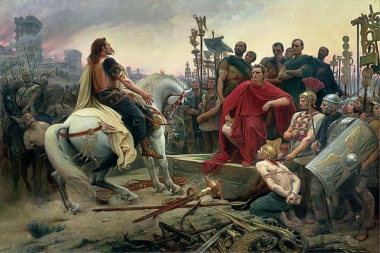
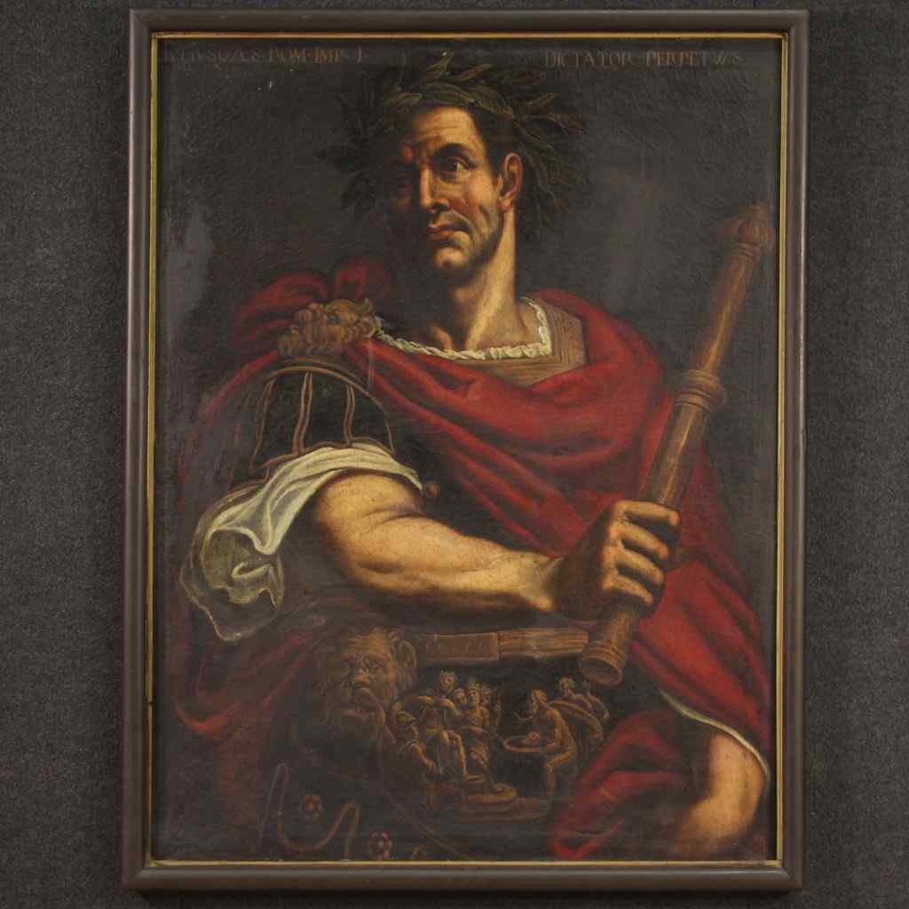
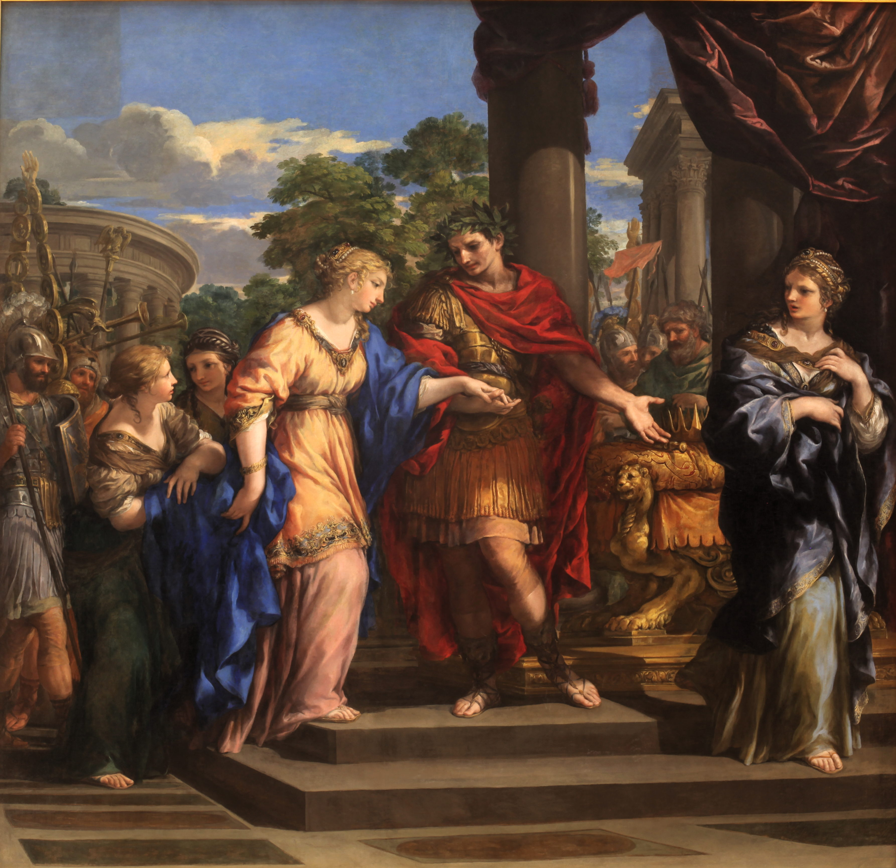
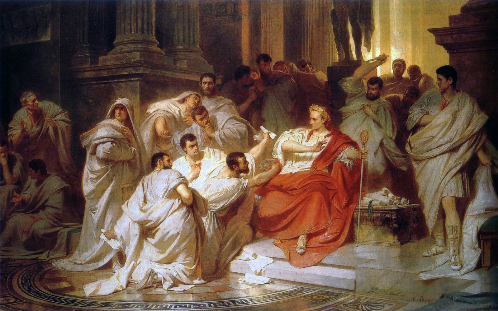
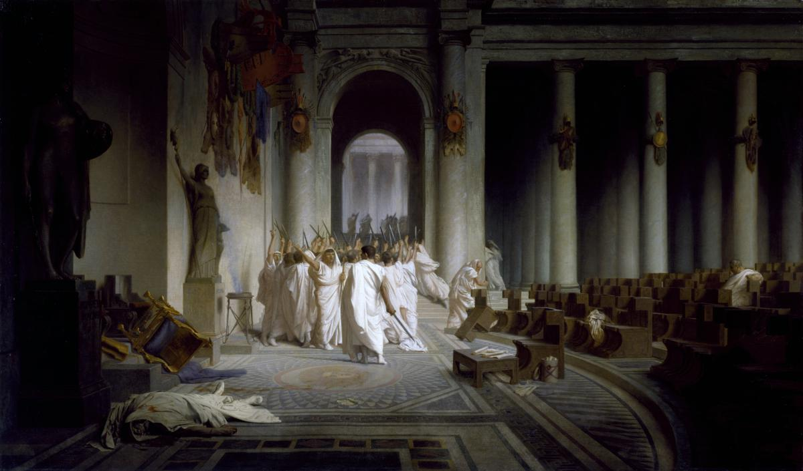
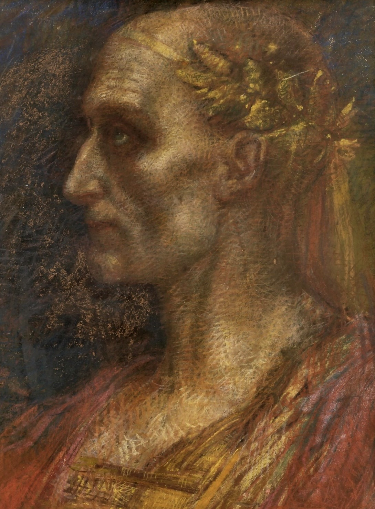
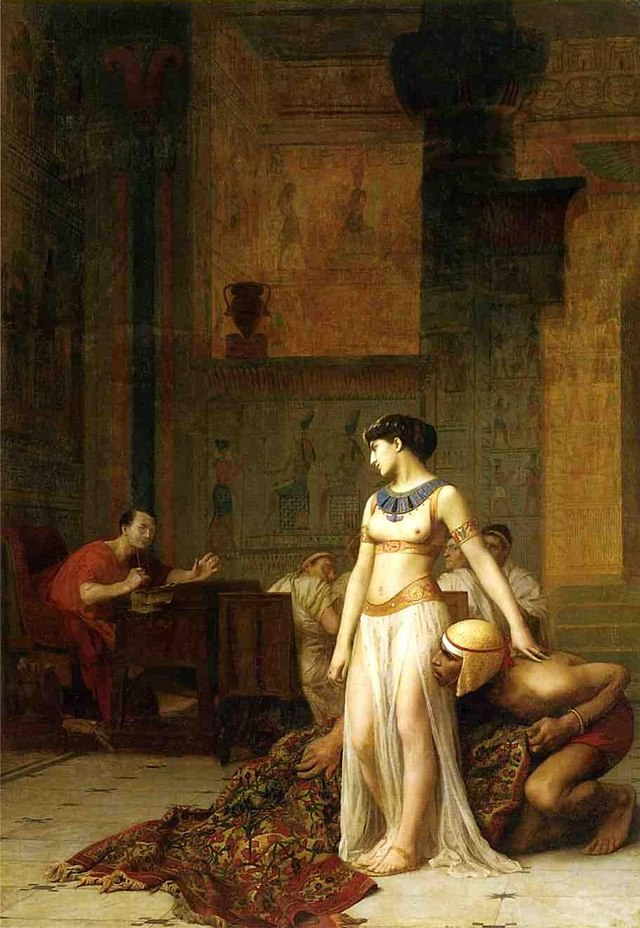
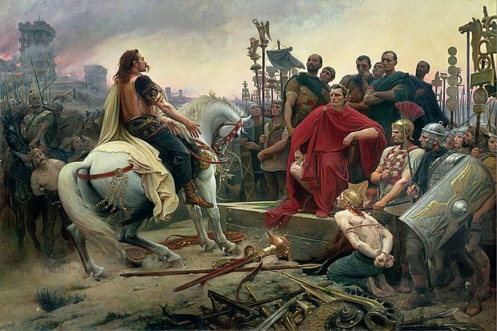
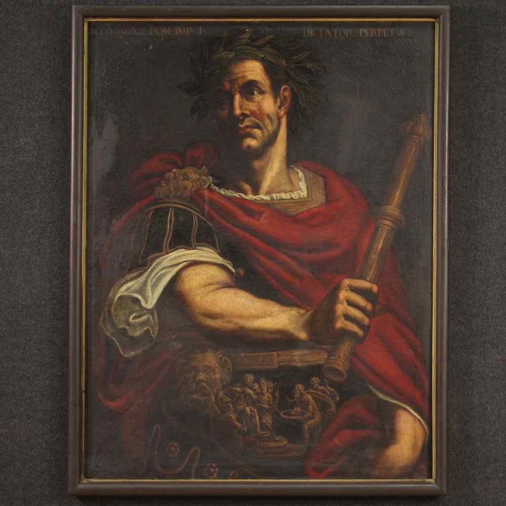
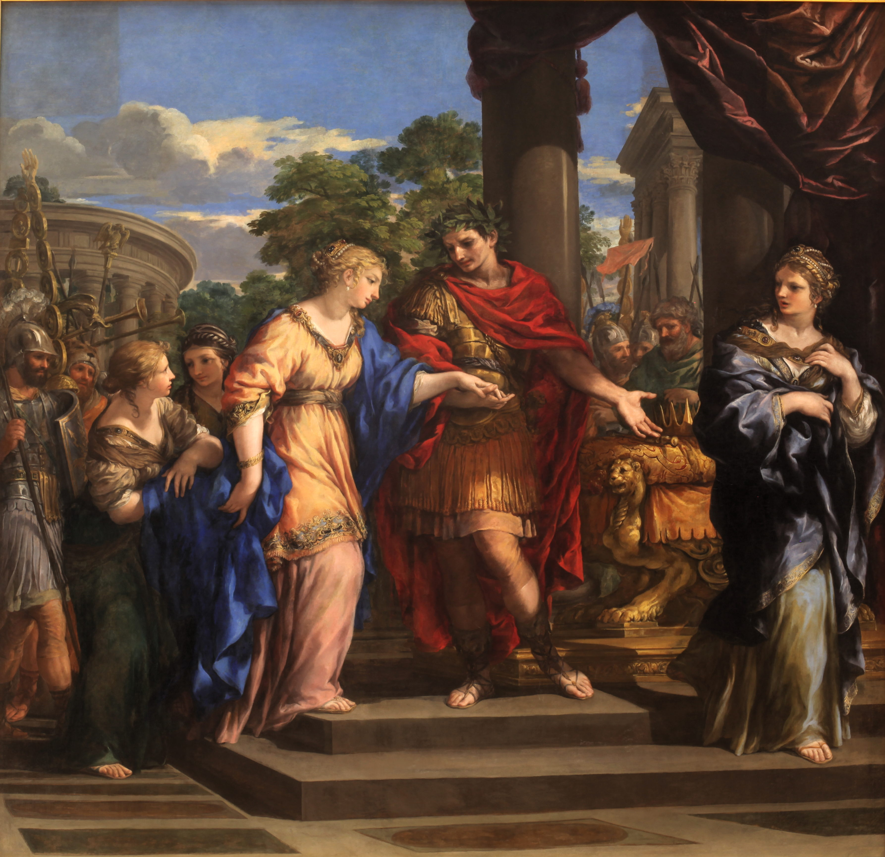
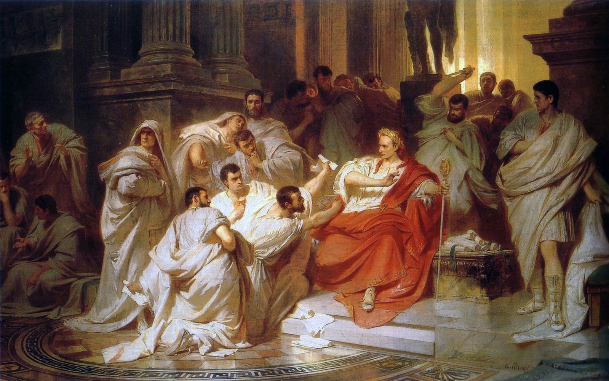
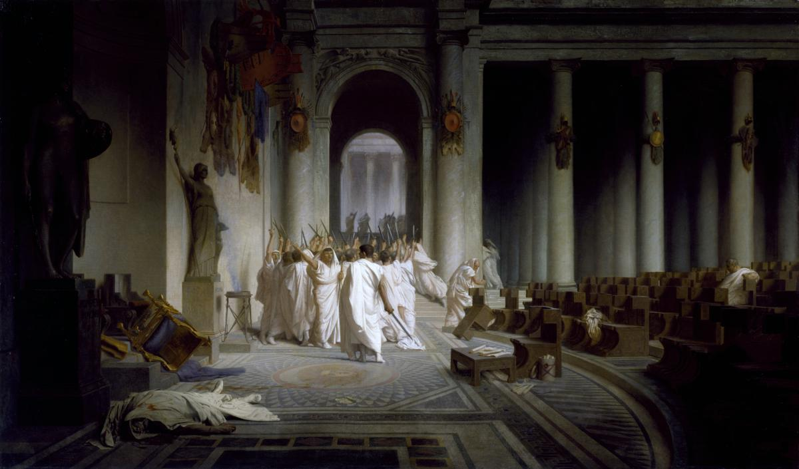
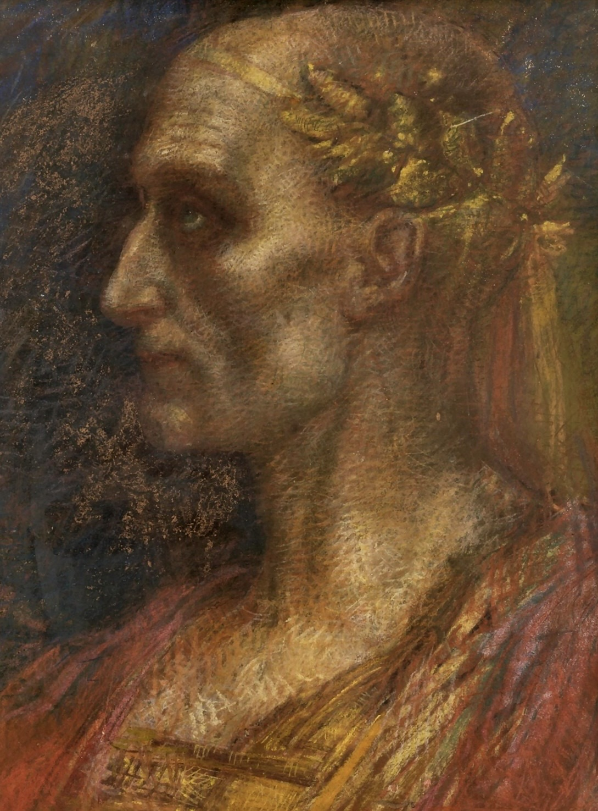
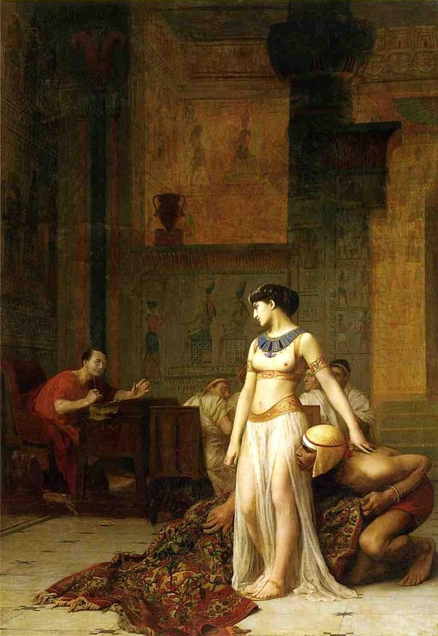